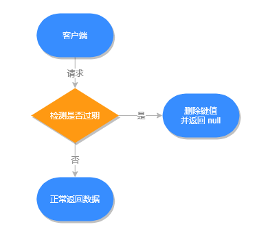
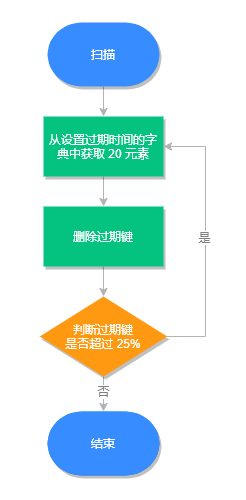

- 01 Redis 是如何执行的.md.html
- 02 Redis 快速搭建与使用.md.html
- 03 Redis 持久化——RDB.md.html
- 04 Redis 持久化——AOF.md.html
- 05 Redis 持久化——混合持久化.md.html
- 06 字符串使用与内部实现原理.md.html
- 07 附录：更多字符串操作命令.md.html
- 08 字典使用与内部实现原理.md.html
- 09 附录：更多字典操作命令.md.html
- 10 列表使用与内部实现原理.md.html
- 11 附录：更多列表操作命令.md.html
- 12 集合使用与内部实现原理.md.html
- 13 附录：更多集合操作命令.md.html
- 14 有序集合使用与内部实现原理.md.html
- 15 附录：更多有序集合操作命令.md.html
- 16 Redis 事务深入解析.md.html
- 17 Redis 键值过期操作.md.html
- 18 Redis 过期策略与源码分析.md.html
- 19 Redis 管道技术——Pipeline.md.html
- 20 查询附近的人——GEO.md.html
- 21 游标迭代器（过滤器）——Scan.md.html
- 22 优秀的基数统计算法——HyperLogLog.md.html
- 23 内存淘汰机制与算法.md.html
- 24 消息队列——发布订阅模式.md.html
- 25 消息队列的其他实现方式.md.html
- 26 消息队列终极解决方案——Stream（上）.md.html
- 27 消息队列终极解决方案——Stream（下）.md.html
- 28 实战：分布式锁详解与代码.md.html
- 29 实战：布隆过滤器安装与使用及原理分析.md.html
- 30 完整案例：实现延迟队列的两种方法.md.html
- 31 实战：定时任务案例.md.html
- 32 实战：RediSearch 高性能的全文搜索引擎.md.html
- 33 实战：Redis 性能测试.md.html
- 34 实战：Redis 慢查询.md.html
- 35 实战：Redis 性能优化方案.md.html
- 36 实战：Redis 主从同步.md.html
- 37 实战：Redis哨兵模式（上）.md.html
- 38 实战：Redis 哨兵模式（下）.md.html
- 39 实战：Redis 集群模式（上）.md.html
- 40 实战：Redis 集群模式（下）.md.html
- 41 案例：Redis 问题汇总和相关解决方案.md.html
- 42 技能学习指南.md.html
- 43 加餐：Redis 的可视化管理工具.md.html
18 Redis 过期策略与源码分析
在 Redis 中我们可以给一些元素设置过期时间，那当它过期之后 Redis 是如何处理这些过期键呢？
过期键执行流程
Redis 之所以能知道那些键值过期，是因为在 Redis 中维护了一个字典，存储了所有设置了过期时间的键值，我们称之为过期字典。
过期键判断流程如下图所示：
过期键源码分析
过期键存储在 redisDb 结构中，源代码在 src/server.h 文件中：
/* Redis database representation. There are multiple databases identified
* by integers from 0 (the default database) up to the max configured
* database. The database number is the 'id' field in the structure. */
typedef struct redisDb {
dict *dict; /* 数据库键空间，存放着所有的键值对 */
dict *expires; /* 键的过期时间 */
dict *blocking_keys; /* Keys with clients waiting for data (BLPOP)*/
dict *ready_keys; /* Blocked keys that received a PUSH */
dict *watched_keys; /* WATCHED keys for MULTI/EXEC CAS */
int id; /* Database ID */
long long avg_ttl; /* Average TTL, just for stats */
list *defrag_later; /* List of key names to attempt to defrag one by one, gradually. */
} redisDb;
小贴士：本文的所有源码都是基于 Redis 5。
过期键数据结构如下图所示：
过期策略
Redis 会删除已过期的键值，以此来减少 Redis 的空间占用，但因为 Redis 本身是单线的，如果因为删除操作而影响主业务的执行就得不偿失了，为此 Redis 需要制定多个（过期）删除策略来保证糟糕的事情不会发生。
常见的过期策略有以下三种：
- 定时删除
- 惰性删除
- 定期删除
下面分别来看每种策略有何不同。
定时删除
在设置键值过期时间时，创建一个定时事件，当过期时间到达时，由事件处理器自动执行键的删除操作。
- **优点：**保证内存可以被尽快地释放。
- **缺点：**在 Redis 高负载的情况下或有大量过期键需要同时处理时，会造成 Redis 服务器卡顿，影响主业务执行。
惰性删除
不主动删除过期键，每次从数据库获取键值时判断是否过期，如果过期则删除键值，并返回 null。
- **优点：**因为每次访问时，才会判断过期键，所以此策略只会使用很少的系统资源。
- **缺点：**系统占用空间删除不及时，导致空间利用率降低，造成了一定的空间浪费。
源码解析
惰性删除的源码位于 src/db.c 文件的 expireIfNeeded 方法中，源码如下：
int expireIfNeeded(redisDb *db, robj *key) {
// 判断键是否过期
if (!keyIsExpired(db,key)) return 0;
if (server.masterhost != NULL) return 1;
/* 删除过期键 */
// 增加过期键个数
server.stat_expiredkeys++;
// 传播键过期的消息
propagateExpire(db,key,server.lazyfree_lazy_expire);
notifyKeyspaceEvent(NOTIFY_EXPIRED,
"expired",key,db->id);
// server.lazyfree_lazy_expire 为 1 表示异步删除（懒空间释放），反之同步删除
return server.lazyfree_lazy_expire ? dbAsyncDelete(db,key) :
dbSyncDelete(db,key);
}
// 判断键是否过期
int keyIsExpired(redisDb *db, robj *key) {
mstime_t when = getExpire(db,key);
if (when < 0) return 0; /* No expire for this key */
/* Don't expire anything while loading. It will be done later. */
if (server.loading) return 0;
mstime_t now = server.lua_caller ? server.lua_time_start : mstime();
return now > when;
}
// 获取键的过期时间
long long getExpire(redisDb *db, robj *key) {
dictEntry *de;
/* No expire? return ASAP */
if (dictSize(db->expires) == 0 ||
(de = dictFind(db->expires,key->ptr)) == NULL) return -1;
/* The entry was found in the expire dict, this means it should also
* be present in the main dict (safety check). */
serverAssertWithInfo(NULL,key,dictFind(db->dict,key->ptr) != NULL);
return dictGetSignedIntegerVal(de);
}
所有对数据库的读写命令在执行之前，都会调用 expireIfNeeded 方法判断键值是否过期，过期则会从数据库中删除，反之则不做任何处理。
惰性删除执行流程，如下图所示：

定期删除
每隔一段时间检查一次数据库，随机删除一些过期键。
Redis 默认每秒进行 10 次过期扫描，此配置可通过 Redis 的配置文件 redis.conf 进行配置，配置键为 hz 它的默认值是 hz 10。
需要注意的是：Redis 每次扫描并不是遍历过期字典中的所有键，而是采用随机抽取判断并删除过期键的形式执行的。
定期删除流程
- 从过期字典中随机取出 20 个键；
- 删除这 20 个键中过期的键；
- 如果过期 key 的比例超过 25%，重复步骤 1。
同时为了保证过期扫描不会出现循环过度，导致线程卡死现象，算法还增加了扫描时间的上限，默认不会超过 25ms。
定期删除执行流程，如下图所示：

- **优点：**通过限制删除操作的时长和频率，来减少删除操作对 Redis 主业务的影响，同时也能删除一部分过期的数据减少了过期键对空间的无效占用。
- **缺点：**内存清理方面没有定时删除效果好，同时没有惰性删除使用的系统资源少。
源码解析
定期删除的核心源码在 src/expire.c 文件下的 activeExpireCycle 方法中，源码如下：
void activeExpireCycle(int type) {
static unsigned int current_db = 0; /* 上次定期删除遍历到的数据库ID */
static int timelimit_exit = 0; /* Time limit hit in previous call? */
static long long last_fast_cycle = 0; /* 上一次执行快速定期删除的时间点 */
int j, iteration = 0;
int dbs_per_call = CRON_DBS_PER_CALL; // 每次定期删除，遍历的数据库的数量
long long start = ustime(), timelimit, elapsed;
if (clientsArePaused()) return;
if (type == ACTIVE_EXPIRE_CYCLE_FAST) {
if (!timelimit_exit) return;
// ACTIVE_EXPIRE_CYCLE_FAST_DURATION 是快速定期删除的执行时长
if (start < last_fast_cycle + ACTIVE_EXPIRE_CYCLE_FAST_DURATION*2) return;
last_fast_cycle = start;
}
if (dbs_per_call > server.dbnum || timelimit_exit)
dbs_per_call = server.dbnum;
// 慢速定期删除的执行时长
timelimit = 1000000*ACTIVE_EXPIRE_CYCLE_SLOW_TIME_PERC/server.hz/100;
timelimit_exit = 0;
if (timelimit <= 0) timelimit = 1;
if (type == ACTIVE_EXPIRE_CYCLE_FAST)
timelimit = ACTIVE_EXPIRE_CYCLE_FAST_DURATION; /* 删除操作的执行时长 */
long total_sampled = 0;
long total_expired = 0;
for (j = 0; j < dbs_per_call && timelimit_exit == 0; j++) {
int expired;
redisDb *db = server.db+(current_db % server.dbnum);
current_db++;
do {
// .......
expired = 0;
ttl_sum = 0;
ttl_samples = 0;
// 每个数据库中检查的键的数量
if (num > ACTIVE_EXPIRE_CYCLE_LOOKUPS_PER_LOOP)
num = ACTIVE_EXPIRE_CYCLE_LOOKUPS_PER_LOOP;
// 从数据库中随机选取 num 个键进行检查
while (num--) {
dictEntry *de;
long long ttl;
if ((de = dictGetRandomKey(db->expires)) == NULL) break;
ttl = dictGetSignedInteger
// 过期检查，并对过期键进行删除
if (activeExpireCycleTryExpire(db,de,now)) expired++;
if (ttl > 0) {
/* We want the average TTL of keys yet not expired. */
ttl_sum += ttl;
ttl_samples++;
}
total_sampled++;
}
total_expired += expired;
if (ttl_samples) {
long long avg_ttl = ttl_sum/ttl_samples;
if (db->avg_ttl == 0) db->avg_ttl = avg_ttl;
db->avg_ttl = (db->avg_ttl/50)*49 + (avg_ttl/50);
}
if ((iteration & 0xf) == 0) { /* check once every 16 iterations. */
elapsed = ustime()-start;
if (elapsed > timelimit) {
timelimit_exit = 1;
server.stat_expired_time_cap_reached_count++;
break;
}
}
/* 每次检查只删除 ACTIVE_EXPIRE_CYCLE_LOOKUPS_PER_LOOP/4 个过期键 */
} while (expired > ACTIVE_EXPIRE_CYCLE_LOOKUPS_PER_LOOP/4);
}
// .......
}
activeExpireCycle 方法在规定的时间，分多次遍历各个数据库，从过期字典中随机检查一部分过期键的过期时间，删除其中的过期键。
这个函数有两种执行模式，一个是快速模式一个是慢速模式，体现是代码中的 timelimit 变量，这个变量是用来约束此函数的运行时间的。快速模式下 timelimit 的值是固定的，等于预定义常量 ACTIVE_EXPIRE_CYCLE_FAST_DURATION，慢速模式下，这个变量的值是通过 1000000*ACTIVE_EXPIRE_CYCLE_SLOW_TIME_PERC/server.hz/100 计算的。
Redis 使用的过期策略
Redis 使用的是惰性删除加定期删除的过期策略。
小结
通过本文可知 Redis 是通过设置过期字典的形式来判断过期键的，Redis 采用的是惰性删除和定期删除的形式删除过期键的，Redis 的定期删除策略并不会遍历删除每个过期键，而是采用随机抽取的方式删除过期键，同时为了保证过期扫描不影响 Redis 主业务，Redis 的定期删除策略中还提供了最大执行时间，以保证 Redis 正常并高效地运行。